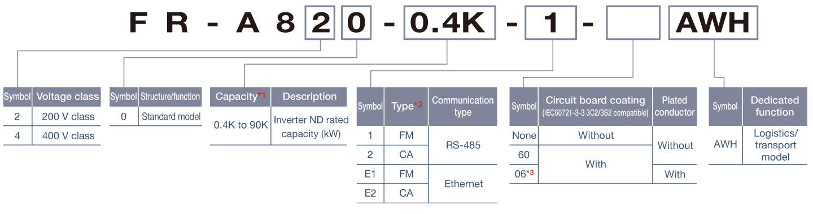
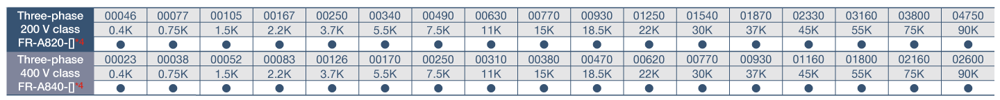
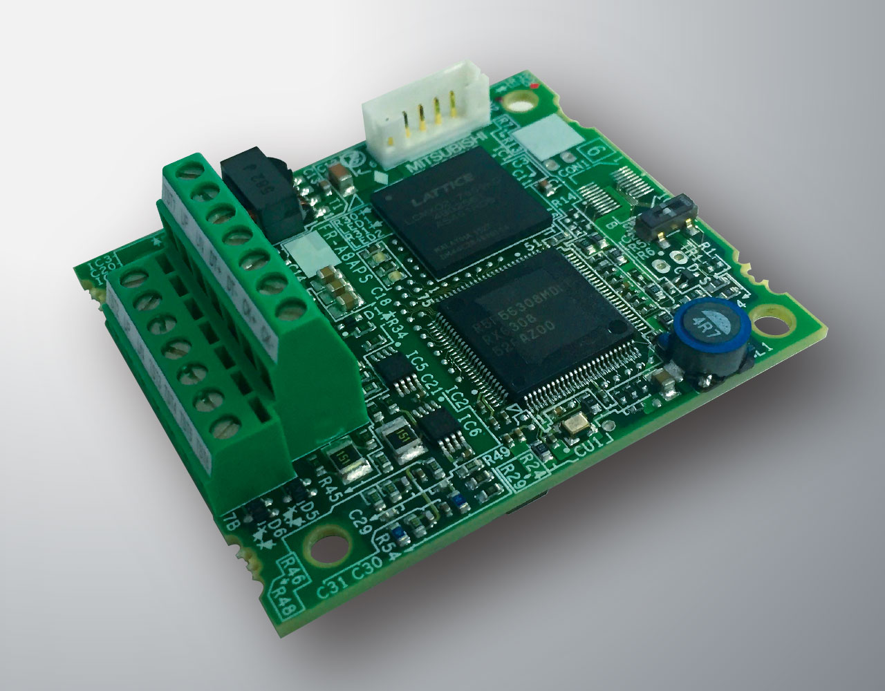

Inverters-FREQROL-A800 Plus Series -FREQROL-A800 Plus for Automated warehouse- Model configuration

Model configuration
Outline dimensions are the same as those of FR-A800 series inverters.
Some functions are restricted. (For details of parameters and differences with the FR-A800 series, refer to the Instruction Manual.)


●：Released model
- *1Models can be alternatively indicated with the inverter rated current (SLD rating).
- *2Specification differs by the type as follows.
- *3Available for the 5.5K or higher.
- *4For the 75K or higher inverter, or whenever a 75 kW or higher motor is used, always connect a DC reactor (FR-HEL), which is available as an option.
| Type | Monitor output | Initial setting | |||
|---|---|---|---|---|---|
| Built-in EMC filter |
Control logic |
Rated frequency |
Pr.19 Base frequency voltage |
||
|
FM (terminal FM equipped model) |
Terminal FM: pulse train output Terminal AM: analog voltage output (0 to ±10VDC) |
OFF | Sink logic |
60Hz |
9999 (same as the power supply voltage) |
|
CA (terminal CA equipped model) |
Terminal CA: analog current output (0 to 20mADC) Terminal AM: analog voltage output (0 to ±10VDC) |
ON | Source logic | 50Hz | 8888 (95% of the power supply voltage) |
Plug-in option for SSI communication
FR-A8APS-02
Distance meters other than those specified on page 6 with SSI interface can be used when the following requirements are met.
| Specification | Requirement |
|---|---|
| Distance meter type | Laser/barcode/encoder |
| Data rate | 0.1MHz/0.2MHz/1.0MHz |
| Data code format | Binary data / gray code |
| Effective data length | 8 to 46 bits |
| Resolution (encoder) | 4096 |
